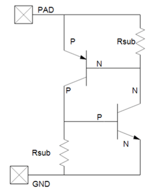
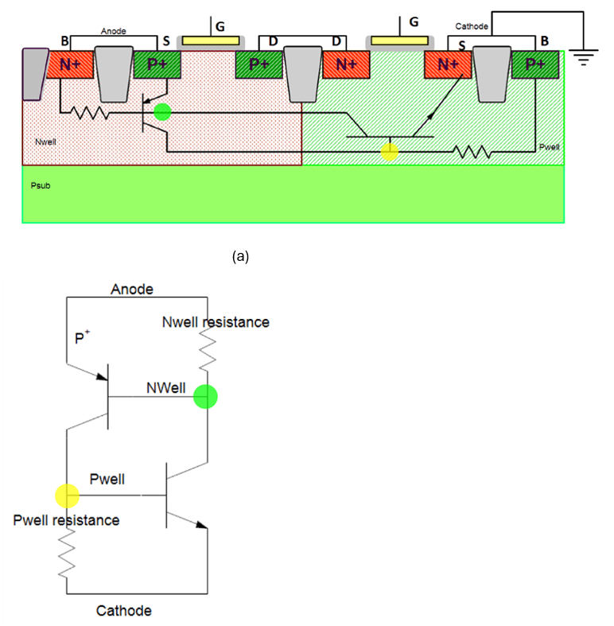
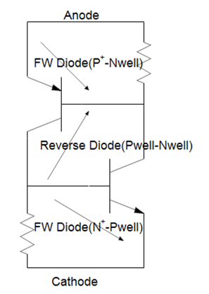
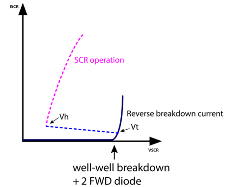
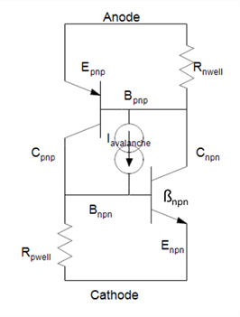
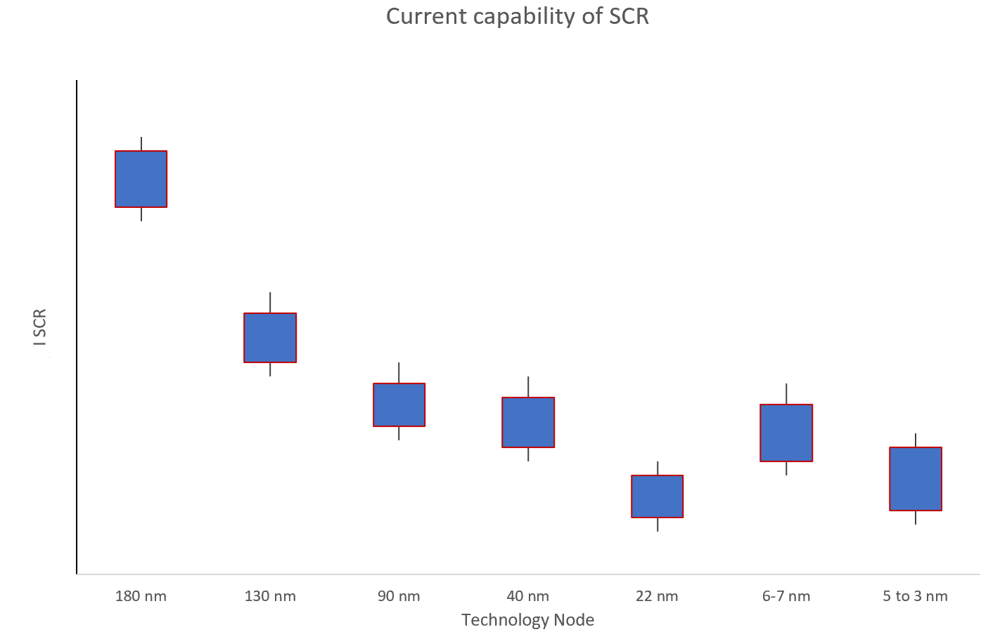

Silicon Controlled Rectifier (SCR) in ESD Protection
1. Introduction
Silicon Controlled Rectifiers (SCRs) are widely used for high-performance on-chip ESD protection.
They are particularly suitable for high-speed, RF, low-capacitance, and compact ESD solutions across
CMOS, SOI, and FinFET technologies.
SCR structures can conduct very high ESD currents if properly triggered and biased.
2. SCR Physical Structure
An SCR consists of a 4-layer PNPN structure formed by parasitic PNP and NPN bipolar transistors.

In CMOS, the SCR is inherently present between the PMOS and NMOS wells.
- PNP transistor
- NPN transistor
- Coupled through well resistances
- Forms regenerative feedback loop
3. Operating Principle
Under positive anode-to-cathode bias:
- Forward diode
- Reverse well-well junction
- Forward diode
When the well junction undergoes avalanche breakdown, base currents are generated
in both parasitic bipolar transistors.
If βPNP × βNPN > 1, regenerative feedback occurs and the SCR turns fully on.


4. Snapback Behavior
Unlike simple avalanche devices, SCRs exhibit strong snapback behavior.
- Trigger Voltage (Vt1)
- Holding Voltage (Vh)
- Very low On-Resistance
- High Current Capability

Once triggered, the voltage collapses while current increases rapidly.
5. Current Capability
SCRs provide significantly higher ESD robustness compared to standard MOS-based protection.


| Protection Type |
Current Capability |
Area Efficiency |
| NMOS Snapback |
Moderate |
Medium |
| SCR |
Very High |
High |
6. Design Considerations
- Trigger control (avoid premature latch)
- Holding voltage optimization
- Parasitic inductance minimization
- Thermal stability
- Leakage control
Proper SCR design ensures strong ESD robustness while avoiding latch-up during normal operation.
7. Application Domains
- High-speed digital interfaces
- RF systems
- SOI and FinFET technologies
- Low-capacitance I/O protection
Technical Reference:
Monthly Pulse – SCR ESD Article
↩ Go to Home – Tech Notes Park